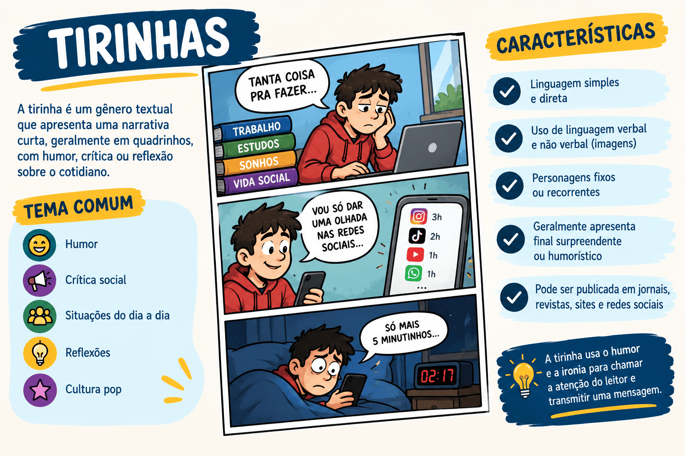

Tirinha: O que é o Gênero Textual, Características e Como Interpretar
Se você já folheou a prova de Linguagens do ENEM, sabe que há presenças ilustres quase garantidas todos os anos: a Mafalda questionando o mundo, o Calvin filosofando com seu tigre Haroldo ou o Hagar, o Horrível, lidando com a vida de viking. Todos eles são astros de um dos gêneros textuais mais amados e cobrados nos vestibulares: a tirinha.
Embora pareçam "apenas desenhinhos para crianças", as tirinhas são verdadeiras obras de arte da comunicação. Elas conseguem contar uma história completa, com início, meio, clímax e desfecho, utilizando apenas três ou quatro pequenos quadros.
Para o aluno, o desafio não é apenas ler os balões de fala, mas decifrar as expressões faciais, o cenário, o uso de onomatopeias e, principalmente, a quebra de expectativa que geralmente ocorre no último quadro, gerando o humor ou a crítica social.
Neste conteúdo, você vai aprender o que é o gênero textual tirinha, suas características gráficas (narrativa sequencial) e por que você nunca mais deve confundi-la com a Charge ou com o Cartum.

O que é o gênero textual Tirinha?
A tirinha (ou tira) é um gênero textual de entretenimento, humorístico ou crítico, caracterizado por ser uma curta sequência narrativa em quadrinhos (geralmente de 2 a 4 quadros). Ela utiliza a linguagem mista (verbal e não verbal) e costuma ser publicada em jornais, revistas, livros didáticos e redes sociais, apresentando uma micro-história com começo, meio e fim.
Tirinha é uma narrativa sequencial curta. Diferente da charge e do cartum (que têm um quadro só), a tirinha mostra a passagem do tempo através dos quadros, usando personagens fixos e conhecidos do público.
Quais são as principais características da Tirinha?
Para interpretar uma tirinha com excelência, você precisa entender como os autores (quadrinistas) constroem o sentido em um espaço tão pequeno. Veja as marcas registradas do gênero:
Marcas estruturais e gráficas
- Sequência Narrativa: É a característica principal. A tirinha conta uma história. Existe uma linha do tempo onde as ações se desenrolam quadro a quadro.
- Personagens Fixos/Recorrentes: A tirinha costuma ter protagonistas fixos com personalidades muito bem definidas (Ex: Mafalda é politizada e idealista; Calvin é criativo e irônico; Garfield é preguiçoso e sarcástico).
- Quebra de Expectativa (Desfecho): A piada ou a crítica sempre mora no último quadro. Os quadros iniciais preparam o terreno e o último traz uma resposta inusitada que "quebra" a lógica que você esperava.
- Linguagem Mista e Recursos Visuais: Usa intensamente as expressões faciais, linhas de movimento (para indicar que alguém correu ou caiu), onomatopeias (BUM!, CRASH!) e diferentes tipos de balões.
Atenção aos Balões!
Na tirinha, o formato do balão também é texto! Um balão com linha contínua indica fala normal. Um balão em formato de nuvem com bolinhas indica pensamento. Um balão com bordas pontiagudas (como explosão) indica grito. Um balão com linha pontilhada indica sussurro. Ler o balão errado muda o sentido da questão!
A diferença: Tirinha, HQ, Charge e Cartum
Chega de confusão nas provas. Veja o resumo definitivo para separar as formas de humor gráfico:
Tirinha vs. HQ
Tamanho! A História em Quadrinhos (HQ) é longa, ocupa páginas inteiras ou revistas (gibi), com tramas complexas. A Tirinha é apenas uma "tira" (geralmente horizontal), contendo de 2 a 4 quadros curtos.
Tirinha vs. Charge/Cartum
Quadros e Narrativa! A Charge e o Cartum resolvem a piada em um único quadro (imagem estática). A Tirinha obrigatoriamente tem sequência de quadros, mostrando uma ação ocorrendo ao longo do tempo.
Dica de Ouro para o ENEM: Conheça as personalidades
O ENEM cobra interpretação de tirinhas quase todo ano. Um grande "atalho" para acertar a questão é conhecer a personalidade dos personagens mais usados:
- Mafalda (Quino): Altamente politizada, crítica ao capitalismo, preocupada com a paz mundial, a desigualdade e o futuro da humanidade.
- Calvin e Haroldo (Bill Watterson): Questiona o sistema educacional, a autoridade dos pais, a existência humana e o excesso de regras, com muita imaginação.
- Hagar, o Horrível (Dik Browne): Satiriza a vida adulta, o casamento, os problemas financeiros e o conflito de gerações usando a roupagem da Idade Média.
- Armandinho (Alexandre Beck): Visão inocente, mas profundamente crítica e questionadora sobre o preconceito, o meio ambiente e a educação imposta pelos adultos.
Questão de aplicação
Questão: (Mestre Kira / Inédita) Considere uma publicação composta por três pequenos quadros sequenciais. No primeiro quadro, um menino questiona seu pai sobre o motivo das guerras. No segundo, o pai tenta dar uma explicação complexa sobre economia e territórios. No terceiro quadro, o menino vira as costas e diz: "Tudo isso para não admitirem que precisam de terapia".
Com base nas características estruturais descritas, esse texto classifica-se predominantemente como:
- Charge, pois critica abertamente um fato político atual e datado, utilizando caricaturas em um quadro único.
- Artigo de opinião, visto que apresenta uma tese estruturada sobre os conflitos bélicos usando linguagem estritamente verbal.
- Tirinha, pois apresenta uma narrativa curta estruturada em quadros sequenciais, cujo humor e crítica são revelados pela quebra de expectativa no último quadro.
- Cartum, já que aborda um tema universal sem o uso de narrativa sequencial.
- História em Quadrinhos (HQ), devido à extensa e complexa trama narrativa contada em páginas inteiras.
Resolução
A alternativa correta é a 3 — Tirinha, pois apresenta uma narrativa curta estruturada em quadros sequenciais...
A descrição destaca a presença de "três pequenos quadros sequenciais" e um clímax que ocorre no último quadro com a fala inesperada do menino (quebra de expectativa). Isso elimina a charge e o cartum (quadro único) e afasta a HQ (extensa). É a estrutura perfeita do gênero tirinha.
Resumo: O que não esquecer sobre a Tirinha
A tirinha é a sua capacidade de contar uma história inteira em apenas 3 ou 4 cenas.
- Estrutura: Quadros sequenciais (narrativa linear) mostrando passagem de tempo.
- Linguagens: Verbal (balões, letreiros) e Não verbal (desenhos, onomatopeias, linhas cinéticas).
- Humor: Sempre gerado pela "quebra de expectativa" no último quadrinho.
- Personagens: Diferente da charge (que usa políticos reais) ou do cartum (que usa anônimos), a tirinha consagra personagens ficcionais recorrentes.
Continue estudando Gêneros Visuais
- Charge: O que é, Características e Como Interpretar
- Cartum: O que é, Características e Diferença para Charge
- Meme: O que é o Gênero Textual, Características e Como Cai no ENEM
- Linguagem verbal, não verbal e mista: o que são e exemplos
- Produção Textual e Redação — página 1
- Produção Textual e Redação — página 2
Referências
RAMOS, Paulo. A leitura dos quadrinhos. São Paulo: Contexto, 2009.
MENDONÇA, Márcia (Org.). Diversidade textual: propostas para a sala de aula. São Paulo: Parábola.
Explore Outros Conteúdos
Continue seus estudos acessando outras seções do site Mestre Kira: